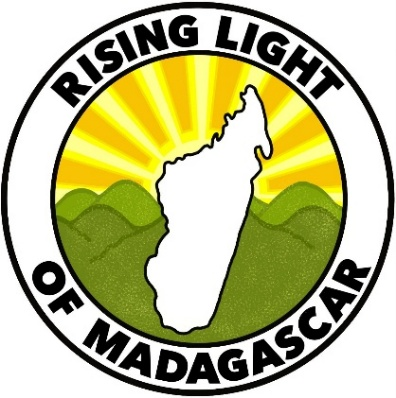

Education
Gospel-centered, relevant education for children and youth, helping them develop love, exploration and care for the world.

Rising Light of MadagascarServing Madagascar since 2015
Rising Light of Madagascar brings education, practical leadership and the gospel of Jesus Christ to the most vulnerable communities across the island.
“Let your light shine before others, that they may see your good deeds and glorify your Father in heaven.” Matthew 5:16
Who we are
Rising Light of Madagascar (RLOM) envisions the country’s welfare manifesting in the alleviation of poverty and the nurturing of good citizenship under the light of the gospel of Jesus Christ.
We advocate for and support educational programs at all levels that have the potential to impact the most vulnerable people in the community. We also promote practical leadership and sustainable self-reliance, both within and outside the church.
Gospel-centered, relevant education for children and youth, helping them develop love, exploration and care for the world.
Capable, accountable leaders who reliably open the way to peace and community thriving.
Communal self-reliance projects equipped with what they need to last.
Where the light reaches
Pastor Edmond and Pastor Arlette travel inland for months at a time, on dirt roads, by ferry and on foot, to reach churches, schools and villages most maps leave out.
Without a birth certificate a child cannot study past 5th grade, and an adult cannot get a national ID. In 2026 alone, 2,161 people in Bemanonga, Mahabo and Andoharanovelona received theirs.
Roofs after Cyclone Gezani, metal walls where palm trunks let in the dust, and 200+ desks for children who sat on the floor.
126 bikes, 450 seminary books, 150+ leadership sessions and 2,000+ seminary students taught, so the work keeps going between visits.
From the capital to the deep south, the light of the gospel and the practical help travel together.
Antananarivo
Our work
Birth certificates, literacy programs, student scholarships and seminary courses.
Pastors, schools, orphans and healing centers, with what they need to serve.
Children and unreached people: Vacation Bible Schools, house-to-house visits, the Jesus film in Malagasy.
Youth, women, church leaders and whole communities, from sewing machines to chicken-raising training.
Partnership between traditional and emerging churches, across denominations.
Impact, 2015 to 2026
Stories from the field
Andoharanovelona · August 2026
Families walked for hours to a primary school yard. After a short worship service, a judge, doctors and the mayor worked through the paperwork in a classroom. 1,825 people received birth certificates there. One grandmother, a mother of 23, came to collect 60: for herself, her children and her grandchildren.
Ambovonomby · 2026
A rural pastor couple spent their entire year’s pay building two schoolrooms out of palm trunks. The wind and dust kept stopping class. Donors funded metal-walled rebuilds, and enrollment grew from 95 to 160 children.
Andromivonga · September 2026
The school is a rented house with no windows, because windows let bandits in. There is no blackboard and children sit on the dirt floor. The one teacher came from far away and could earn more elsewhere. She teaches with paper folders, and she does not give up.
Bealanana · July 2026
At a gathering so full the benches were carried out, three pastors, two men and one woman, received bikes for the long distances of their ministries. 126 pastors have one now.
“Even though I am physically exhausted, deep in my heart, I still want to do what I can for the cause of God’s kingdom in this country.” Pastor Edmond, September 2026
2026 needs · $100,000
Every line of this year’s budget has an item number. Pick one or more, and put the item number in your memo so your gift goes exactly there.
Ways to give and get involved
Rising Light of Madagascar is a 501(c)(3) nonprofit (EIN 33-4862958). Gifts are tax-deductible to the extent allowed by law.
Send to Rising Light of Madagascar
risinglightmada@gmail.com
Payable to Rising Light of Madagascar, memo “Madagascar Mission” and the item number.
3341 Burritt Way
La Crescenta, CA 91214
Send to Arlette Razafimanantsoa.
For safe travel on hard roads, for teachers who serve far from home, and for the victims of Cyclone Gezani.
Purchase Malagasy arts, host an event, or tell a friend about the mission.
Trips run at least three weeks, between July 21 and December 31. Write to us to plan one.
Ask about a tripOur story
Born in Ivato Centre and raised in Fianarantsoa, Edmond leads the work on the ground. He serves on his denomination’s national committee for theological education and speaks at pastors’ conferences across the country, preaching in his own tribal language when he comes home.
Arlette co-leads the mission, teaches and preaches on every trip, and keeps partners in the United States connected through reports and newsletters. One of today’s presbytery leaders was her seminary student thirty years ago.
Nomena, their daughter, serves as CEO of Rising Light of Madagascar in the United States. She has traveled to Madagascar to lead women’s leadership development, including in Sahambavy.
Updates